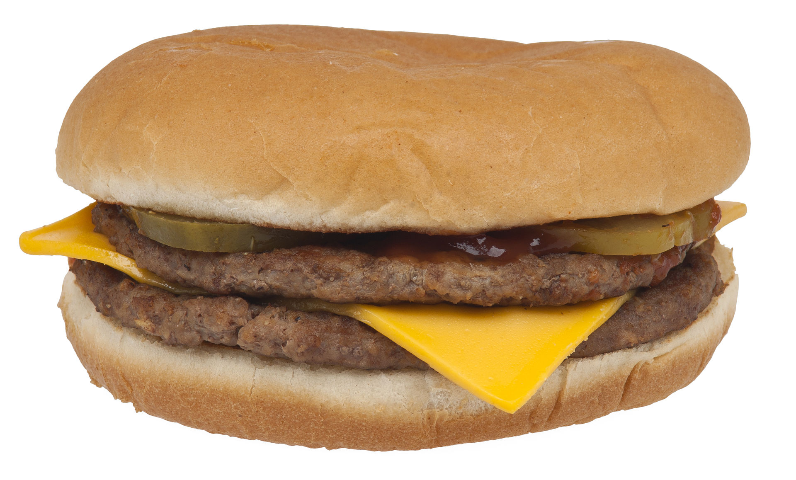

McDouble

Description
The classic McDouble® burger stacks two 100% pure beef patties seasoned with just a pinch of salt and pepper. Wondering what the difference is between a McDouble® and a Double Cheeseburger? A slice of cheese! It’s topped with tangy pickles, chopped onions, ketchup, mustard and a melty slice of American cheese. The McDouble® contains no artificial flavors, preservatives or added colors from artificial sources.* Our pickle contains an artificial preservative, so skip it if you like.
Ingredients
- 100% Beef Patty
- Regular Bun
- Pasteurized Process American Cheese
- Pickle Slices
- Ketchup
- Onions
- Mustard
- Dried onion flake
Steps
- First, place the 2 pounds of ground beef into a bowl. Then add the onion flakes, salt, and pepper, and mix well.
- Once the meat and seasoning have been mixed, divide the beef into 8 balls. Then press them flat on waxed paper until they're about 1/8 inch thick.
- Heat your frying pan to medium heat. Place 1 to 2 patties at a time on the pan, and cook them for about 2-3 minutes per side with a lid covering the pan. You may want to slightly salt each side as you cook them.
- Place each cooked patty on a plate lined with paper towels.
- With your frying pan still on the heat, place the hamburger buns on, lightly toasting them.
- On the top bun, spread the ketchup, mustard, and onion, and top it with 1-2 pickle slices. Add one beef patty, then one slice of American cheese, and another beef patty on top of that. Place the bottom bun on the burger, turn it right side up, and serve hot.
Notes
- While putting your burgers together, if the beef patties are not piping hot, here's a tip. Construct the burger as instructed, and place the entire burger in the microwave for 10-15 seconds. This helps to melt the cheese and keeps the top of the bun soft- similar to McDonald's buns.
- Just like ordering a custom burger at McDonald's you can do the same thing from home! I like to add lettuce and tomato to my homemade McDouble for a crisp fresh bite.
Go Back